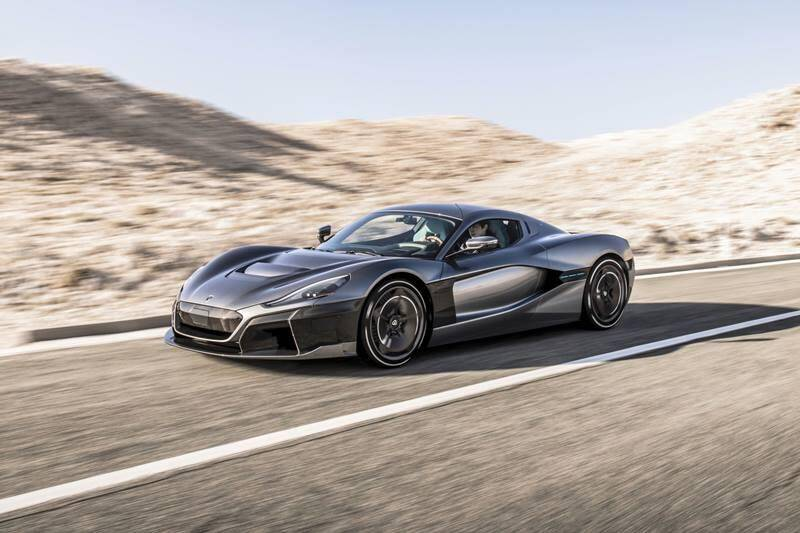

The Ultimate Aero was tested by the Guinness Book of World Records as the fastest car in the world in the year 2007 and it held that record till July 2010. Its Twin Turbo V8 engine packs 1183 hp. It does 0-100 km/h in 2.7 seconds and a top speed of 413 km/h.

McLaren has broke its own high-speed record with the Speedtail late last year. The Speedtail broke the record of 386.7 km/h that was previously set by the McLaren F1 back in the year 1998. During test runs, the Speedtail prototype ‘XP2’ attained a top speed of 403 km/h.
Powered by a 6.5-litre V12 with a peak power output of 1000 bhp at 10,500 rpm, before continuing on to a maximum rpm figure of 11,100. The naturally-aspirated and emissions-compliant road car churns out peak torque is 740 Nm at 7,000 rpm. It 'ss do similar speeds as the McLaren Speedtail.
The C_Two has four in-wheel electric motors that make a combined power of 1888 hp and 2300 Nm of torque. The Rimac C_Two is not based on the Concept One and has been developed from the ground up. Range between charges is 640 km and does 0-100 km/h in 1.85 seconds and a top speed of 413 km/h.
